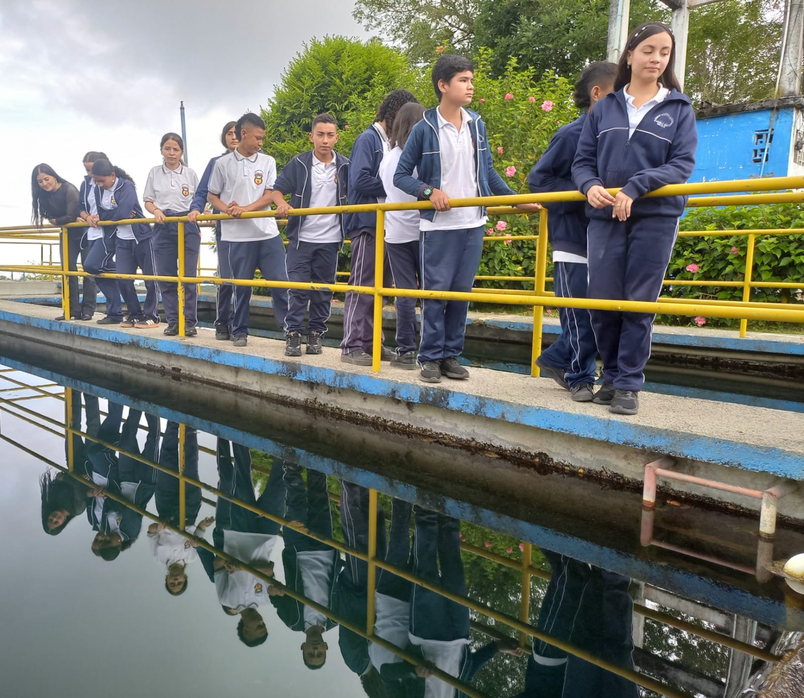
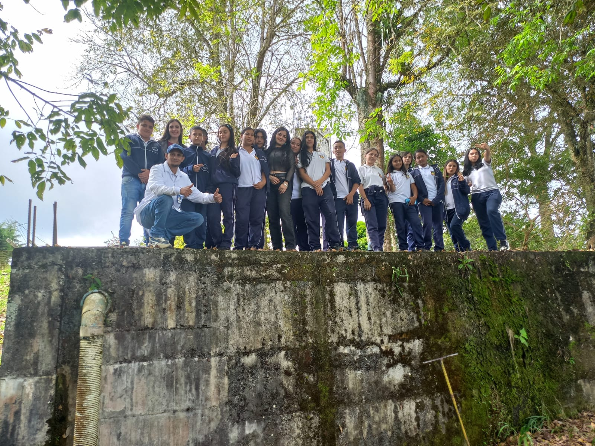
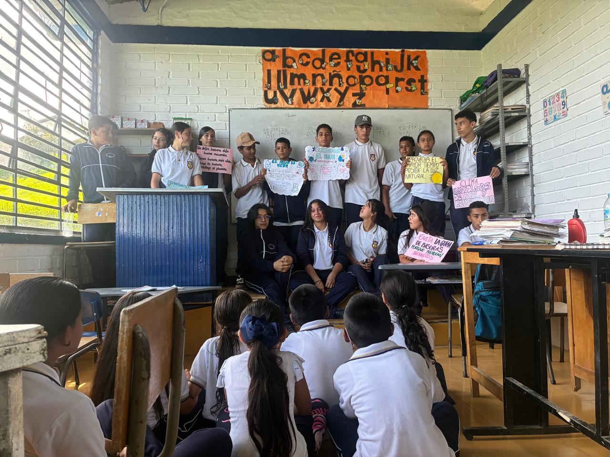

Conocemos, investigamos y protegemos el agua.
Somos estudiantes que observamos nuestro territorio, recogemos información y convertimos los datos en conocimiento para cuidar la vida.
Conoce nuestro proyecto ↓El Club Defensores del Azul es una experiencia educativa de la Institución Educativa Pueblo Rico, en Neira, Caldas, orientada al conocimiento y protección del agua, los ecosistemas y la biodiversidad.
Conocer el territorio para comprenderlo, valorarlo y protegerlo.
Observar → registrar → investigar → analizar → proteger.
Participan estudiantes de los grados 6.º a 11.º mediante experiencias de investigación escolar.
La investigación parte de lugares reales de nuestro entorno rural y de la zona cafetera de Neira.
Espacio para observar, registrar y comprender la importancia de los humedales.
Territorio de observación de biodiversidad, agua y condiciones ambientales.
Área de trabajo para el reconocimiento del territorio y sus recursos naturales.
Escenario para desarrollar procesos de observación e investigación escolar.
Pasamos de mirar nuestro territorio a producir información que permita tomar mejores decisiones.
Utilizamos herramientas TIC para llevar nuestras observaciones de campo a información organizada y georreferenciada.
Ubicación de los registros en el territorio.
Evidencias visuales de los sitios y organismos.
Notas y diagnósticos realizados durante el trabajo de campo.
Visualización espacial de nuestros registros.
Archivo de datos:
Abrir CSV de CyberTracker
Uno de nuestros procesos es el inventario de la vegetación asociada a los ecosistemas estudiados.
Registramos individuos vegetales presentes en los sitios de estudio.
Registramos nombre común, nombre científico y tipo de planta.
Altura, temperatura, humedad relativa y pH del suelo.
Realizamos observaciones para establecer condiciones y posibles afectaciones.
El laboratorio vivo permite aprender haciendo, experimentar y relacionar la educación agropecuaria con la conservación ambiental.
Integramos producción sostenible, biodiversidad, suelo, agua y tecnología.
El territorio se convierte en aula, laboratorio y fuente de preguntas.
Nuestro trabajo se fortalece mediante procesos educativos, técnicos y comunitarios.
Articulación con el programa de Aprovechamiento sustentable de la biodiversidad vegetal.
Experiencias relacionadas con agricultura, biodiversidad y sostenibilidad.
Vinculación con actores del territorio para aprender y actuar de manera colaborativa.
Uso de herramientas digitales para investigar y comunicar nuestros resultados.
DEICY será una futura asistente de inteligencia artificial para el Club Defensores del Azul.
La propuesta busca integrar información de campo, registros de CyberTracker, mapas, fotografías y conocimiento ambiental para facilitar la consulta y análisis de nuestros datos.



Construimos registros ambientales organizados y georreferenciados.
Representamos nuestros sitios de investigación mediante herramientas cartográficas.
Reconocemos y documentamos la riqueza natural de nuestro entorno.
Fortalecemos el compromiso de los estudiantes con el cuidado del agua.
Cada dato representa un lugar. Cada lugar representa una historia. Y cada historia nos compromete con el cuidado de nuestro territorio.